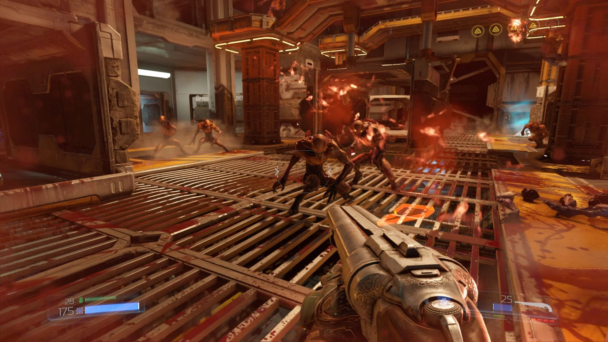

Shooter: Адреналин и точность в каждом выстреле
Шутеры (Shooter) – это жанр видеоигр, в которых основное внимание уделяется стрельбе и боям с использованием различных видов оружия. Игроки часто берут на себя роли солдат, наемников или других персонажей, сталкивающихся с врагами в динамичных и напряженных сражениях. Шутеры могут быть как от первого, так и от третьего лица, и могут включать элементы стратегии и тактики.
Ключевые особенности шутеров:
- Динамичный геймплей: Быстрая реакция, точность и умение быстро принимать решения имеют решающее значение для успеха.
- Разнообразие оружия: Игроки могут использовать широкий арсенал оружия, от пистолетов и автоматов до ракетниц и гранатометов.
- Многопользовательский режим: Многие шутеры предлагают возможность игры с другими игроками, что добавляет элемент соревнования.
- Тактические элементы: В некоторых играх требуется стратегическое планирование, работа в команде и использование укрытий.
- Графика и звук: Шутеры часто выделяются высококачественной графикой и звуковыми эффектами, создающими атмосферу реалистичности.
Разновидности шутеров:
- Шутеры от первого лица (FPS): Игроки видят мир глазами персонажа, что создает эффект присутствия.
- Шутеры от третьего лица (TPS): Игроки видят своего персонажа со стороны, что позволяет лучше контролировать окружение.
- Тактические шутеры: Фокус на стратегии и командной игре, где каждый игрок выполняет определенные роли.
- Королевская битва: Жанр, где игроки сражаются друг с другом до последнего выжившего, часто на больших картах.
Примеры игр:


Классические шутеры:
- Doom
- Quake
- Counter-Strike
- Half-Life
Современные шутеры:
- Call of Duty: Warzone
- Battlefield V
- Rainbow Six Siege
- Overwatch
Тактические шутеры:
- Counter-Strike: Global Offensive
- Valorant
- Insurgency: Sandstorm
Королевские битвы:
- Fortnite
- Apex Legends
- PlayerUnknown's Battlegrounds (PUBG)
Шутеры предлагают игрокам уникальный опыт, наполненный адреналином и напряжением. Каждый найдет что-то для себя в этом жанре, будь то одиночная кампания или многопользовательские сражения.